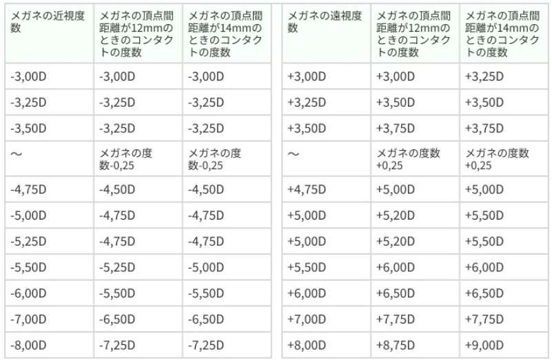

💧 コンタクトレンズ処方クイズ 💧
スタッフ向け - 球面CL処方マスター
💧 コンタクトレンズ処方クイズ
❌ 間違えた問題:
0問
🆕 未挑戦の問題:
29問
✅ 正解した問題:
0問
📊 全問題数:
29問
今日の3問: 間違い・未挑戦を優先出題
全問モード: 全29問を順番に出題
全問モード: 全29問を順番に出題
問題 1 / 29
正解: 0
問題 1
CL処方において、最初に行うことは何ですか？
問診（使用目的、コンタクト歴、アレルギー等の聴取）
オートレフでの測定
トライアルレンズの選定
視力検査
解説：処方の第一歩は、患者様の希望や生活環境、アレルギーの有無などを詳しく聞く問診です。これにより、最適なレンズの種類や処方方針を立てることができます。
問題 2
オートレフのK値（ケラト値）は何を測定していますか？
眼圧
眼軸長
角膜のカーブ（曲率半径）
角膜の直径
解説：K値（ケラトメトリー値）は、角膜のカーブの強さを測定した値です。CLのベースカーブ（BC）を決定するための非常に重要な指標となります。
問題 3
ソフトコンタクトレンズ（SCL）のベースカーブ（BC）を選ぶ際、K値に対してどう選ぶのが一般的ですか？
K値と全く同じ値を選ぶ
K値より0.6mm～1.0mm程度大きい（緩い）カーブを選ぶ
K値より小さい（きつい）カーブを選ぶ
K値はBC選択に関係ない
解説：SCLは柔らかく、角膜にフィットするため、角膜そのもののカーブ（K値）よりも少し緩めのBCを選ぶのが一般的です。これを「アペックスクリアランス」の考え方に基づいています。
問題 4
ハードコンタクトレンズ（HCL）のBCを選ぶ際、K値に対してどう選ぶのが一般的ですか？
K値にできるだけ近い値を選ぶ（フィッティング重視）
K値より1.0mm以上大きい（緩い）カーブを選ぶ
必ずK値より0.2mm小さい（きつい）カーブを選ぶ
SCLと同じ基準で選ぶ
解説：HCLは硬い素材でできているため、角膜の形状に非常に近いBCを選ぶ必要があります。これを「アライメントフィッティング」と呼びます。K値とBCの差が大きいと、レンズが安定しなかったり、角膜に負担をかけたりします。
問題 5
メガネの度数からCLの度数を決定する際に、必ず行わなければならない計算は何ですか？
球面等価換算
頂点間距離換算
瞳孔間距離の調整
加入度の計算
解説：メガネは目から約12mm離れていますが、CLは角膜の上に直接乗ります。この距離の違いによる度数のズレを補正するのが「頂点間距離換算」です。特に度数が強い場合は必須の計算です。

頂点間距離による度数換算表（近視・遠視）
問題 6
頂点間距離換算を行うと、強い近視（マイナス度数）の場合、CLの度数はメガネの度数と比べてどうなりますか？
強くなる（マイナスの数字が大きくなる）
弱くなる（マイナスの数字が小さくなる）
変わらない
プラス度数になる
解説：強いマイナス度数のレンズは、目に近づけるほど効果が弱くなります。そのため、メガネ（-8.00Dなど）からコンタクトレンズにする場合、度数は弱く（-7.50Dなど）なります。
 近視のレンズ度数換算早見表（コンタクト⇔メガネ）
近視のレンズ度数換算早見表（コンタクト⇔メガネ）
近視のレンズ度数換算早見表（コンタクト⇔メガネ）
問題 7
SCLのフィッティングを評価する「瞬目テスト」で、理想的なレンズの動きはどれですか？
まばたきをした後、レンズがわずかに動き、ゆっくりと元の位置に戻る
まばたきをしても、レンズが全く動かない
まばたきをすると、レンズが上に大きくずれる
レンズが常に下の方に張り付いている
解説：適度な動き（0.2～0.4mm程度）は、涙液交換を促し、角膜への酸素供給や老廃物の排出に不可欠です。全く動かないのはタイト（きつい）、動きすぎるのはルーズ（ゆるい）フィッティングと判断されます。
問題 8
HCLと角膜の間にある涙の層がレンズとして働く効果を何と呼びますか？
毛細管現象
涙液レンズ効果
ティンダル現象
マスキング効果
解説：HCLと角膜の間にある涙が、レンズのような役割を果たして屈折力を補正する現象を「涙液レンズ効果」と呼びます。これにより、HCLは軽度の角膜乱視であれば、レンズ自体に乱視度数がなくても矯正することが可能です。
問題 9
SCLの処方において、レンズの直径（DIA）が小さすぎるとどうなりますか？
レンズが曇りやすくなる
レンズが破れやすくなる
角膜を完全に覆うことができず、レンズの縁が角膜に乗ってしまう
度数が強く感じられる
解説：SCLは角膜全体を覆い、その縁が白目の部分（結膜）に乗るのが適切な状態です。DIAが小さすぎると、角膜をカバーしきれず、装用感が悪化したり、角膜に傷をつけたりする原因となります。
問題 10
CLの過矯正（度数が強すぎること）が引き起こす主な問題は何ですか？
遠くが見えにくくなる
眼精疲労や頭痛、肩こり
ドライアイ
アレルギー症状の悪化
解説：過矯正のレンズを装用すると、目は常にピントを合わせようと無理な調節を強いられるため、毛様体筋が疲労します。これが眼精疲労の主な原因となり、頭痛や肩こりといった身体的な不調につながることもあります。
問題 11
「トライアルレンズ」を装用してもらう最大の目的は何ですか？
レンズの色味を確認してもらうため
実際の見え方や装用感、フィッティングを確認するため
レンズの裏表を確認する練習をしてもらうため
患者様の購入意欲を高めるため
解説：計算上のデータだけでは完璧な処方はできません。実際にトライアルレンズを装用し、フィッティング状態、視力、装用感などを総合的に評価・確認することが、安全で快適なコンタクトレンズ処方には不可欠です。
問題 12
ハードCLがソフトCLより優れている点は何ですか？
装用感が良い
スポーツに向いている
乱視矯正力と酸素供給性
価格が安い
解説：HCLは硬い素材のため、角膜乱視を涙液レンズ効果で良好に矯正できます。また、レンズが小さく動きがあるため、涙液交換が活発に行われ、角膜への酸素供給性が高いというメリットがあります。
問題 13
CLの上から度数を微調整する「オーバーレフラクション」で、S+0.25Dを入れて視力が変わらない場合、何を意味しますか？
度数が弱すぎる
度数が適切、または少し強い可能性がある
乱視がある
レンズが汚れている
解説：プラス度数を追加しても視力が低下しないということは、患者様が自身の調節力を使ってそのプラス度数を打ち消していることを意味します。これは、元の度数が適正か、やや過矯正気味であることを示唆します。
問題 14
ベースカーブ（BC）が角膜に対して「タイト（きつい）」な場合、どのような症状が出やすいですか？
レンズがすぐに外れる
圧迫感、充血、視力の不安定
レンズがずれやすい
酸素透過性が 上がる
解説：タイトなレンズは角膜を締め付け、涙の交換を妨げます。これにより、圧迫感や充血、酸素不足による角膜のむくみで視力が不安定になるなどの問題が起こります。
問題 15
ベースカーブ（BC）が角膜に対して「ルーズ（ゆるい）」な場合、どのような症状が出やすいですか？
圧迫感と充血
異物感、レンズがずれる、視力が安定しない
目が乾きやすい
レンズが張り付いて取れない
解説：ルーズなレンズは角膜上での動きが大きすぎるため、まばたきのたびに異物感を感じたり、視界がクリアでなくなったりします。特に下方視でずれやすいのが特徴です。
問題 16
初めてCLを使う患者様に、最も重要な指導事項は何ですか？
レンズを安く買う方法
正しいレンズケアと、定期検査の重要性
レンズをつけたまま寝ても良いこと
レンズは左右を気にしなくていいこと
解説：CLは便利な医療機器ですが、誤った使用は重篤な眼障害につながります。安全に使用するためには、毎日の正しいレンズケア（洗浄・保存）と、自覚症状がなくても眼科医による定期的な検査を受けることが不可欠であることを、強く指導する必要があります。
問題 17
HCLのフィッティングで、フルオレセイン（染色液）を使って観察する目的は何ですか？
レンズの傷を確認するため
レンズと角膜の間の涙液層の状態（フィット具合）を確認するため
角膜のカーブを測定するため
レンズの酸素透過性を確認するため
解説：フルオレセインは涙液を染色し、ブラックライトで照らすことで、レンズと角膜の間の涙の分布を可視化します。これにより、レンズが角膜に均一に接触しているか（アライメント）、どこかが強く当たったり浮いたりしていないかを詳細に評価できます。
問題 18
SCLの素材による分類で、「含水率」が高いレンズの特徴として正しいものはどれですか？
汚れにくい
耐久性が高い
つけ心地が柔らかいが、乾燥しやすい
酸素を通しにくい
解説：高含水レンズは水分を多く含むため、つけ心地が柔らかく、酸素透過性も高い傾向にあります。しかしその反面、レンズ自体の水分が蒸発しやすく、涙を奪ってしまうため、ドライアイの症状を感じやすいというデメリットもあります。
問題 19
「1日使い捨て（ワンデー）レンズ」の最大のメリットは何ですか？
価格が最も安い
毎日新しいレンズで、洗浄の手間がなく衛生的
乱視矯正力が最も高い
酸素透過性が最も高い
解説：ワンデータイプの最大の利点は、毎日のレンズケアが不要で、常に清潔な状態のレンズを装用できることです。これにより、レンズの汚れによるトラブルや、ケア用品によるアレルギーのリスクを大幅に減らすことができます。
問題 20
HCLの処方で、レンズの直径（DIA）を決定する主な要素は何ですか？
角膜の直径
まぶたの開き具合（瞼裂の大きさ）
瞳孔の大きさ
BC（ベースカーブ）
解説：HCLのDIAは、主に瞼裂の大きさによって決定されます。瞼裂が狭い人に大きいDIAのレンズを入れると、まぶたに引っかかり、フィッティングが不安定になります。
問題 21
CL装用者の定期検査で、スリット（細隙灯顕微鏡）で特に観察すべきことは何ですか？
まつげの長さ
瞳の色
角膜の傷や血管新生、結膜のアレルギー反応の有無
水晶体の濁り
解説：定期検査では、レンズによる角膜障害（傷、酸素不足による血管新生など）や、アレルギー性結膜炎（巨大乳頭結膜炎など）が起きていないかを、スリットランプを用いて詳細にチェックすることが最も重要です。
問題 22
強い近視の患者様にSCLを処方する際、メガネの度数と比べてコンタクトの度数はどうなりますか？
強くなる（マイナスの数字が大きくなる）
弱くなる（マイナスの数字が小さくなる）
変わらない
プラス度数になる
解説：眼鏡は角膜から約12mm離れた位置で装用されるのに対し、SCLは角膜上に直接装用されます。この頂点間距離の違いにより、近視の場合はSCLの度数は眼鏡より弱くなります（例：眼鏡-6.00D → SCL-5.50D）。覚え方として、近視でも遠視でもSCLは眼鏡に対してプラス方向にシフトします。この差は±4.00D以上で顕著になり、強度近視ほど換算が必要です。
近視のレンズ度数換算早見表（-3.75以下はコンタクトと同じ度数）
近視のレンズ度数換算早見表（-3.75以下はコンタクトと同じ度数）
問題 23
患者が「CLは一度つけたら、外すまでずっと見え方は同じ」と考えている場合、なんと説明しますか？
「はい、その通りです」
「時間経過による乾燥や汚れで、夕方になると見えにくくなることがあります」
「朝より夜の方が見えやすくなります」
「見え方は度数にしか影響されません」
解説：コンタクトレンズは、長時間の装用でレンズ表面が乾燥したり、タンパク質などの汚れが付着したりします。これにより、レンズの光学的な性能が低下し、夕方頃になるとかすみやぼやけを感じることがあります。
問題 24
HCLの処方で、角膜乱視が-1.50Dある場合、涙液レンズによってどの程度矯正が期待できますか？
ほとんど矯正できない
約半分（-0.75D程度）
ほぼ完全に矯正される
過矯正になる
解説：HCLは、その硬さによって角膜の形状を涙液レンズで補正するため、中程度までの角膜乱視であれば、球面レンズでも良好な視力が得られることがほとんどです。
問題 25
SCLのフィッティングで「プッシュアップテスト」を行う目的は何ですか？
レンズの度数を確認するため
レンズの動き（タイトかルーズか）を確認するため
レンズのセンタリングを確認するため
患者様の協力を得るため
解説：医学的な判断が必要な「高度管理医療機器」だからアップテストは、下まぶたでレンズをそっと押し上げて、その動き具合や元の位置に戻るスピードを見ることで、フィッティングの適正度を評価する方法です。瞬目テストと合わせて総合的に判断します。
問題 26
なぜCL処方には、眼科医の診察が法律で義務付けられているのですか？
医学的な判断が必要な「高度管理医療機器(クラスⅣ)」だから
医学的な判断が必要な「高度管理医療機器(クラスⅢ)」だから
度数決定が非常に難しいから
メーカーとの契約があるから
解説：コンタクトレンズは、心臓のペースメーカーなどと同じ「高度管理医療機器」に分類されます。誤った使用は失明につながる重篤な眼障害を引き起こす可能性があるため、眼科医による診察と処方が不可欠です。
問題 27
トライアルレンズで「S-3.00Dで1.0」の患者が、より強い「S-3.25Dで1.2」見えた場合、どちらを処方するのが原則ですか？
過矯正を避け、日常生活に十分な視力が出ているS-3.00Dを優先する
患者様の希望を優先し、S-3.25Dを処方する
中間をとってS-3.125Dで特注する
どちらも処方せず、再検査とする
解説：CL処方の原則は「最高視力の最弱度数」です。1.0の視力で日常生活に支障がないのであれば、眼精疲労の原因となる過矯正を避けるため、より弱いS-3.00Dを選択するのが一般的です。
問題 28
レンズケースの衛生管理について、患者様にどう指導するのが最も適切ですか？
「水道水で毎日洗ってください」
「たまに熱湯消毒してください」
「同じ保存液を継ぎ足して使ってください」
「毎日洗浄・自然乾燥させ、定期的に新しいケースに交換してください」
解説：レンズケースは細菌の温床になりやすいです。毎日の洗浄としっかりとした自然乾燥、そして1.5〜3ヶ月ごとの定期的な交換が、感染症予防のために非常に重要です。水道水での洗浄は、アカントアメーバ角膜炎のリスクがあるため厳禁です。
問題 29
強い遠視の患者様にSCLを処方する際、メガネの度数と比べてコンタクトの度数はどうなりますか？
強くなる（プラスの数字が大きくなる）
弱くなる（プラスの数字が小さくなる）
変わらない
マイナス度数になる
解説：眼鏡は角膜から約12mm離れた位置で装用されるのに対し、SCLは角膜上に直接装用されます。この頂点間距離の違いにより、遠視の場合はSCLの度数は眼鏡より強くなります（例：眼鏡+6.00D → SCL+6.50D）。覚え方として、近視でも遠視でもSCLは眼鏡に対してプラス方向にシフトします。この差は±4.00D以上で顕著になり、強度遠視ほど換算が必要です。
 遠視の度数換算表（メガネ→コンタクト、頂点間距離別）
遠視の度数換算表（メガネ→コンタクト、頂点間距離別）
遠視の度数換算表（メガネ→コンタクト、頂点間距離別）